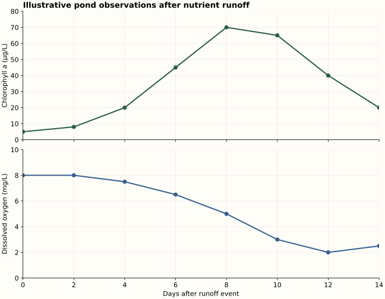

Demonstration sample · Grade 5
Where did the water go?
A short science lesson connects evaporation and condensation to observations, explanations, and formative feedback.
Open lesson and learner activity →I’m Aasia Mahmood, an educator and business owner who organizes complex content into practical learning experiences, assessments, and reusable teaching materials.
Explore selected work ↘My experienceVerona, Wisconsin · Open to remote U.S. opportunities
The teaching and operations case studies describe my experience. The science lesson, assessment, and planning template below are new demonstration samples prepared for this portfolio, not archived classroom artifacts.
A short science lesson connects evaporation and condensation to observations, explanations, and formative feedback.
Open lesson and learner activity →A performance task and analytic rubric make success criteria explicit and guide targeted revision.
Explore assessment and rubric →Materials preparation and colleague training supported teaching continuity during an absence and a later handover.
Read the continuity case study →A homeschooling approach paired with a reusable planning template shows how materials can evolve with learner needs.
Explore adaptation and planning →Eutrophication graphs, data analysis, a 20-point assessment, and an analytic rubric.
Explore graphs and assessment →A memorable ck spelling lesson with sound mapping, word sorting, assessment, and a skill rubric.
Explore the ELA lesson →A 40-minute grade 5 science lesson designed around observation and explanation.
Given two everyday examples, learners will distinguish evaporation from condensation and explain each using liquid-water and water-vapor language.
A labeled diagram, an explanation supported by an observation, and a new application question. A pre-check identifies starting ideas; an exit ticket identifies next steps.
Begin with a familiar puzzle, model one explanation, then release responsibility through paired and independent practice. Use text alongside a simple visual, without treating learners as having fixed learning styles.
Offer oral or written responses, a large-print diagram, vocabulary support, and sentence starters. Describe visual changes aloud. Use labeled arrows rather than color alone.
| Time | Learning experience | Check and response |
|---|---|---|
| 0–5 min | Ask: “A puddle dries after the rain. Where does the water go?” Collect predictions without grading them. | Listen for “disappears” versus “becomes water vapor.” Keep the initial explanation for comparison. |
| 5–15 min | Observe drops forming outside a sealed, dry-sided cup containing cold water and ice. Use a prepared before/after puddle example for evaporation. | Ask whether outside drops came through the cup. Explain that water vapor in surrounding air cools and condenses on the cold surface. |
| 15–25 min | Model an explanation: “The liquid puddle became water vapor and mixed with the air.” Pairs label liquid → vapor and vapor → liquid. | Clarify that evaporation can occur below boiling temperature. If observations are weak in dry air, use a teacher-provided observation description. |
| 25–35 min | Learners explain the drying puddle and outside cup droplets using the task below. | Use the rubric to identify one accurate idea and one next step. |
| 35–40 min | Exit ticket: explain why a bathroom mirror can become wet after a warm shower. Revisit the initial puddle prediction. | If learners name the process but omit its direction, revisit liquid ↔ vapor with labeled arrows. |
Sentence support: “The water started as ____. It changed to ____. I know this because ____.”
Materials: clear sealed cup, water, ice, dry towel, prepared puddle observations. Adult supervision for materials; no heating is needed. This sample does not claim formal curriculum-board alignment or classroom-tested results.
Learning outcome: Learners will explain that both evaporation and boiling change liquid water into water vapor, and distinguish where and under what conditions each process happens.
| Feature | Evaporation | Boiling |
|---|---|---|
| Where it happens | At the liquid surface. | Throughout the liquid, with water-vapor bubbles forming within it and rising. |
| Temperature | Can happen below the boiling point, including at room temperature. | Occurs at the boiling temperature for the surrounding pressure. Pure water boils at about 100°C at standard atmospheric pressure; the boiling point changes with pressure. |
| What learners observe | A puddle dries or wet fabric loses water without sustained bubbling. | Sustained bubbling throughout sufficiently heated water. |
| What stays the same | Both are vaporization: liquid water becomes gaseous water. Neither requires water molecules to become a new substance. | |
Misconception check: Water vapor is invisible. The visible white cloud above hot water contains tiny liquid droplets formed when vapor cools and condenses. Also, small bubbles during initial warming may be dissolved gases escaping; sustained boiling is the comparison target.
Materials and safety: Use images or video for the comparison. Learners do not heat water or approach hot water or vapor. If an adult demonstrates boiling, follow the setting’s safety procedures and maintain a safe viewing distance. Add 10–15 minutes to the original lesson, or teach this extension separately.
Feedback: “You identified that both processes change liquid to gas. Now explain where the change occurs: surface only for evaporation, throughout the liquid for boiling.”
This practice check runs in your browser. No responses are collected.
Evaluate the explanation, then use the evidence to choose the next teaching move.
Performance task: Explain a drying puddle and droplets outside a cold cup. Add a labeled diagram and cite an observation. Assess the science separately from handwriting or artistic skill.
| Criterion | 3 · Secure | 2 · Developing | 1 · Beginning |
|---|---|---|---|
| Scientific explanation | Correctly explains liquid → vapor for evaporation and vapor → liquid for condensation. | Explains one process correctly, or names both with an incomplete direction of change. | Explanation is missing or retains a major misconception, such as water disappearing. |
| Evidence and reasoning | Uses a relevant observation and explains how it supports the claim. | Gives a relevant observation without clearly connecting it to the claim. | Gives no relevant observation, or an observation contradicts the explanation. |
| Diagram and communication | Labels liquid, vapor, and directions clearly; diagram agrees with explanation. | Main idea is understandable but one label or direction is missing or unclear. | Labels and directions are absent or obscure the explanation. |
“You correctly explained that the puddle became water vapor. Now revise the cup explanation: identify where the water vapor came from and what happened when it touched the cold surface.”
Report the three criterion scores separately. Reteach the state change if science is unclear; model a claim–evidence connection if reasoning is weak. Let learners revise, then check transfer with the wet-mirror example. A later check can assess retention.
Proposed rubric; not validated for reliability. Before shared use, score sample responses with another educator, discuss differences, and refine descriptors. Provide equivalent oral-response options when appropriate.
At Beacon Light Academy, I was the sole biology lead and handled my course preparation and assessment. A month-long absence required another teacher to carry the course forward. Relocation later required a successor handover.
Coverage planning, knowledge transfer, sequencing, materials organization, assessment readiness, and attention to instructional continuity.
This account summarizes my responsibilities. Archived handover documents and measured before/after results are not included. The checklist below is a new demonstration template.
My homeschooling experience spans 4K through grade 12 across subjects. I used and reused materials, adapting curriculum and pacing to learner needs.
I organize learning schedules, select resources, explain concepts, review completed work, and provide feedback. Reuse begins with checking whether an existing resource still supports the intended learning goal.
The structure below turns that approach into a repeatable workflow. It is a newly prepared portfolio sample, not a recovered homeschool record.
| Planning field | Prompt | Example for the water lesson |
|---|---|---|
| Outcome | What will the learner explain or do? | Distinguish evaporation and condensation. |
| Starting point | What does the learner already understand? | Ask where a drying puddle goes. |
| Reuse or revise | Which material still fits? What needs changing? | Keep a labeled diagram; simplify instructions and add vocabulary support. |
| Evidence | What response will show understanding? | Explanation, diagram, and supporting observation. |
| Adaptation | How can barriers be reduced? | Offer oral responses, large print, and sentence starters. |
| Next step | What changes after reviewing the work? | Reteach vapor → liquid, or extend to a new condensation example. |
Interpret pond data, explain an ecological mechanism, and propose a defensible response.
Learning outcomes: Learners will interpret two time-series graphs, explain how excess nutrient input can lead to oxygen depletion, and propose a nutrient-reduction strategy with a monitoring plan.
Excess nitrogen and phosphorus can stimulate algal growth. When organic material dies, decomposers use dissolved oxygen during respiration. Shading and respiration can also affect oxygen conditions. The amount of oxygen varies with photosynthesis, temperature, mixing, depth, and time of day; an algal bloom does not mean oxygen always falls immediately.
New portfolio demonstration, not a historical classroom artifact. All numerical data below are invented for instruction, not measurements from a real pond. Chlorophyll a is used as a proxy for algal biomass. Assume samples were collected at a consistent depth and time of day. The scenario supports a plausible explanation, not proof of causation.

| Day | Chlorophyll a (µg/L) | Dissolved oxygen (mg/L) |
|---|---|---|
| 0 | 5 | 8 |
| 2 | 8 | 8 |
| 4 | 20 | 7.5 |
| 6 | 45 | 6.5 |
| 8 | 70 | 5 |
| 10 | 65 | 3 |
| 12 | 40 | 2 |
| 14 | 20 | 2.5 |
Support: Use “The graph shows…”, “A possible explanation is…”, and “To test this, I would…”. Oral explanations and a labeled causal diagram may demonstrate the same outcomes. Do not grade drawing skill or spelling unless meaning is unclear.
Feedback example: “Your peak and minimum are accurate. Strengthen the explanation by identifying the decomposers and their respiration; the graphs alone do not show that algae directly killed fish.”
Common misconception: “All algal blooms are toxic.” Correct it: some blooms produce toxins, but toxicity is not established by these data. Oxygen depletion can cause harm without toxins.
Extension: This example shows bloom growth and decline, not a pure sigmoid curve. A simple logistic growth model can illustrate an S-shaped rise toward a limit under selected assumptions; it does not capture every bloom’s collapse or oxygen dynamics.
| Criterion | Full evidence | Partial evidence | Limited or absent evidence |
|---|---|---|---|
| Graph reading 4 points | 1 point each: day 8; 70 µg/L; day 12; 2 mg/L. | Award 1 point for each correct element. Value points require correct units. | 0 for each missing or incorrect element. |
| Trend and calculation 4 points | 1 each: rise to day 8 then decline; 6 mg/L decrease; 75% decrease; correct percentage method. | Award each element independently. Accept a correct method despite a minor arithmetic slip. | 0 for each missing or incorrect element. |
| Causal explanation 6 points | 1 each: excess N/P; stimulated algae; dead organic material; decomposer respiration; oxygen loss linked to fish stress; distinction between observation and inference. | Award 1 point per accurate, meaningfully connected element. No point for a term used without a relevant explanation. | 0 for absent or scientifically incorrect elements. |
| Response and evaluation 6 points | 2 points: plausible action + nutrient-reduction mechanism. 1: alternative variable. 3: relevant monitoring measure, consistent sampling, useful comparison/control. | Action alone earns 1 of 2. Award monitoring components independently. Accept other scientifically defensible plans. | 0 where action or evaluation is absent, unrelated, or contradicted by the science. |
Use criterion scores to guide feedback rather than treating the total as a validated proficiency cutoff. Before shared scoring, calibrate on example responses and revise ambiguous descriptors. This rubric has not been field-tested.
5 min: elicit predictions about a greener pond. 10 min: read axes, units, and sampled trends. 10 min: model a nutrient → algae → decomposition → oxygen explanation. 15–20 min: independent assessment. 5–10 min: compare explanations, give criterion-based feedback, and revise.
USGS — Nutrients and Eutrophication · EPA — Basic Information on Nutrient Pollution. These sources support the mechanism; they are not the source of the illustrative numerical data.
A playful memory aid for learning the final ck spelling pattern.
Learning outcome: Given familiar one-syllable words ending in /k/, learners will identify the preceding sound and choose ck or k for the taught examples, explaining the short-vowel clue.
Teacher explanation: In many one-syllable English words, final /k/ is spelled ck immediately after a single short vowel: back, neck, sick, sock, duck. Teach the memory aid as a story about spelling, not a literal danger to the vowel. The letters c and k work together as a digraph representing one /k/ sound.
Contrast: If another consonant comes between the vowel and final /k/, these examples use k: milk, desk, pink. After vowel teams, examples such as beak and book also use k. Do not generalize “always put c before k.” English has exceptions and other spellings; this introductory lesson focuses on the regular examples below.
b · a · ck
/b/ /a/ /k/ — three sounds, four letters.
The short vowel is immediately before /k/, so use ck.
Access: Model familiar word meanings; provide clear pronunciation, sound boxes, and letter tiles. Learners may point or build words before writing. Offer spoken explanations. Use underlining and labels rather than color alone.
Finish with k or ck: ba___ · ne___ · si___ · so___ · du___ · mil___ · des___ · pin___.
Sort and explain: Place the completed words under “short vowel immediately before /k/” or “consonant immediately before /k/.” Say why c joins k in back but not milk.
Teacher key: back, neck, sick, sock, duck; milk, desk, pink. First group uses ck after a short vowel; second uses k after a consonant.
Feedback: “You heard the ending /k/. Now listen just before it: duck has a short vowel directly before /k/, so put c before k. In desk, /s/ is between the vowel and /k/, so use k.”
| Skill | Evidence and scoring | Teaching response |
|---|---|---|
| Final spelling 0–4 | 1 point for each correct ck/k ending in the four dictated words. | If errors cluster after short vowels, revisit vowel + ck with sound boxes. |
| Pattern explanation 0–2 | 1 point for each correct explanation: short vowel immediately before /k/; consonant before /k/. | If learner says “every /k/ needs c,” compare duck with desk. |
| Phoneme mapping 0–2 | 1 point for identifying three phonemes in neck; 1 for mapping ck to one sound. | If c and k are counted as separate sounds, blend and map the digraph together. |
| Transfer 0–2 | 1 point for the correct final spelling in kick; 1 for task. | Recheck with new familiar words after instruction rather than relying only on memorized examples. |
The mnemonic was supplied by Aasia Mahmood. This lesson, practice set, and rubric are new portfolio demonstration materials, not archived classroom work. Use the skill scores for feedback; no validated mastery cutoff is claimed.
Grade 5–6 homeroom teaching with responsibility for 30 students; collaboration across three homerooms on materials and assessments. ELA and social studies in grades 5–6, science in grades 5–11, and sole biology leadership using the Edexcel curriculum.
Curriculum planning and adaptation across 4K–grade 12, learning schedules, resource selection, feedback, and progress monitoring.
Business budgeting, daily planning, customer requirements, and creative project coordination. Volunteer scheduling coordination for American Red Cross blood drives and school volunteering at Olson Elementary.
M.S., University of Karachi. Completed training includes Google Project Management, Google UX Design, and IBM Prompt Engineering, alongside MIT xPRO full-stack MERN coursework.
I’m interested in remote curriculum, assessment, learning-design, and education-operations opportunities.
Connect on LinkedIn ↗Professional portfolio · No student names, work, or private records are included.